Partial differential equations (PDEs) are differential equations in two or more variables, and because they involve several dimensions, solving them numerically is often computationally intensive. Moreover, they come in such a variety that they often require tailoring for individual situations. Usually very little can be found out about a PDE analytically, so they often require numerical methods. Hence, something should be said about them here.
There are two major distinct types of PDEs. One type describes the evolution over time, or any other variable, starting from an initial configuration. Physical examples are the propagation of sound waves (wave equation) and the spread of heat in a medium (diffusion equation or heat equation). These are “initial value problems.” The other group are static solutions constrained by boundary conditions. Examples are the electric field of charges at rest (Poisson equation) and the charge distribution of electrons in an atom (time-independent Schrödinger equation). These are “boundary value problems.” The same distinction can already be made for ordinary differential equations. For example, -f′′(x) = f(x) with f(0) = 1 and f′(0) = -1 is an initial value problem, while the same equation with f(0) = 1 and f′(1) = -1 is a boundary value problem.
As an example of an initial value problem, consider the advection equation in one-dimensional space x and time t:
This describes, for example, the transport of a substance with concentration f in a fluid with velocity v. When a quantity is conserved, changes with time are due to material moving in from one side or out the other side. The flux at any point is vf and the amount of material in an interval of length 2h is 2hf, hence ∂(2fh)∕∂t = vf(x - h) - vf(x + h). In the limit h → 0, this leads to the local conservation law ∂f∕∂t + ∂(vf)∕∂x = 0.
If v is constant, then the solution is simply f(x,t) = g(x-vt), where g can be any function in one variable; its form is determined by the initial condition f(x, 0). In an infinite domain or for periodic boundary conditions, the average of f and the maximum of f never change.
A simple numerical scheme would be to replace the time derivative with [f(x,t + k) -f(x,t)]∕k and the spatial derivative with [f(x + h,t) -f(x-h,t)]∕2h, where k is a small time interval and h a short distance. The advection equation then becomes
This discretization is accurate to first order in time and to second order in space. With this choice we arrive at the scheme f(x,t+k) = f(x,t)-kv[f(x+h,t)-f(x-h,t)]∕2h.
Instead of the forward difference for the time discretization we can use the backward difference [f(x,t) - f(x,t - k)]∕k or the center difference [f(x,t + k) - f(x,t - k)]∕2k. Or, f(x,t) in the forward difference can be eliminated by replacing it with [f(x + h,t) + f(x - h,t)]∕2. There are further possibilities, but let us consider only these four. Table 15.1 lists the resulting difference schemes and some of their properties.
| stencil | scheme | stability |
| 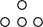 | fjn+1 = f jn - v k _ 2h(fj+1n - f j-1n) | unconditionally unstable |
| 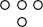 | fjn+1 + v k _ 2h(fj+1n+1 - f j-1n+1) = f jn | unconditionally stable |
| 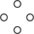 | fjn+1 = f jn-1 - v k h(fj+1n - f j-1n) | conditionally stable k∕h < 1∕|v| |
| 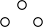 | fjn+1 = 1 2(1 - v k h)fj+1n + 1 2(1 + v k h)fj-1n | conditionally stable k∕h < 1∕|v| |
For purely historical reasons some of these schemes have names. The second scheme is called Lax-Wendroff, the third Leapfrog (a look at its stencil in table 15.1 explains why), and the last Lax-Friedrichs. But there are so many possible schemes that this nomenclature is not practical.
The first scheme does not work at all, even for constant velocity. Figure 15.1(a) shows the appearance of large, growing oscillations that cannot be correct, since the exact solution is the initial conditions shifted. This is a numerical instability.
(a)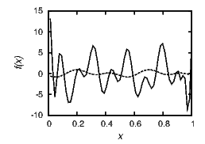
(b)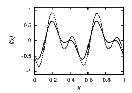
(c)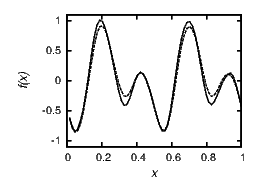
(d)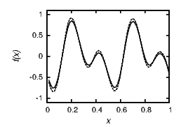
Since the advection equation is linear in f, we can consider a single mode f(x,t) = f(t) exp(imx), where f(t) is the amplitude and m the wave number. The general solution is a superposition (sum) of such modes. For the first scheme in table 15.1 this leads to
and further to f(t + k)∕f(t) = 1 - ikv sin(mh)∕h. Hence, the amplification factor
which is larger than 1. Modes grow with time, no matter how fine the resolution. Modes with shorter wavelength (larger m) grow faster, therefore the instability.
The same analysis applied, for instance, to the last of the four schemes yields
As long as |vk∕h|≤ 1, the amplification factor |A|≤ 1, even for the worst m. Hence, the time step k must be chosen such that k ≤ h∕|v|. This is a requirement for numerical stability.
The second scheme in table 15.1 contains fn+1, the solution at a future time, simultaneously at several grid points and hence leads only to an implicit equation for fn+1. It is therefore called an “implicit” scheme. For all other discretizations shown in the table, fn+1 is given explicitly in terms of fn. The system of linear equations can be represented by a matrix that multiplies the vector fn+1 and yields fn at the right-hand side:
Stars stand for plus or minus vk∕2h and all blank entries are zeros. The elements in the upper right and lower left corner arise from periodic boundary conditions. (If we were to solve the advection equation in more than one spatial dimension, the matrix would become more complicated.) The implicit scheme leads to a tridiagonal system of equations that needs to be solved at every time step, if the velocity depends on time. With or without corner elements, the system can be solved in O(N) steps and requires only O(N) storage. Hence, the computational cost is not at all prohibitive. The scheme is stable for any step size. It becomes less and less accurate as the step size increases, but is never unstable.
The third, center-difference scheme is explicit and second-order accurate in time, but requires three instead of two storage levels, because it simultaneously involves fn+1, fn, and fn-1. It is just like taking half a time step and evaluating the spatial derivative there, then using this information to take the whole step. Starting the scheme requires a single-differenced step initially.
The stability of the last of the four schemes was already discussed. The scheme is first-order accurate in time and second-order accurate in space, so that the error is O(k) + O(h2). When the time step is chosen as k = O(h), as appropriate for the stability condition k ≤ h∕|v|, the time integration is effectively the less accurate discretization. Higher orders of accuracy in both space and time could be achieved with larger stencils.
Of course, we would like to solve the advection equation with a varying, rather than a constant, velocity. Over small time and space steps the velocity can be linearized, so that the conclusions we have drawn remain practically valid. If the equation is supposed to express a conservation law, the velocity should be inside the spatial derivative and should be discretized correspondingly.
This lesson demonstrates that choosing finite differences is somewhat of an art. Not only is one discretization a little better than another, but some work and others do not. Many of the properties of such schemes are not obvious, like stability; it takes some analysis or insight to see it.
Calculating the amplification of individual modes can reveal the stability of a scheme, but there are also other methods. Series expansion of the last scheme in table 15.1 leads to f(x,t) + k∂f∕∂t = f(x,t) - vk∂f∕∂x + (h2∕2)∂2f∕∂x2, and further to
This is closer to what we are actually solving than the advection equation itself. The right-hand side, not present in the original equation, is a dissipation term that arises from the discretization. The dissipation constant is h2∕2k, so the “constant” depends on the resolution. This is called “numerical dissipation.” The scheme damps modes, compared to the exact solution. Indeed, in figure 15.1(d) a decay of the numeric solution relative to the exact solution is discernible. The higher the spatial resolution (the smaller h), the smaller is the dissipation constant, because a suitable k is proportional to h to the first power, and the less is the damping.
There is the intuitive notion that the time step must be small enough to include the region the solution depends on—for any numerical integrator of PDEs. For the advection equation, the solution shifts proportionally with time and therefore this causality criterion is |v| < h∕k for explicit schemes. This correctly reproduces the stability criterion of the last two schemes in table 15.1. (In fact, the solution depends only on the “upwind” direction, and it is possible to construct a stable finite-difference scheme that only uses f(x,t + k) and f(x,t) when the velocity is negative, and f(x,t - k) and f(x,t) when the velocity is positive.) In the second scheme of table 15.1, the implicit scheme, every point in the future depends on every point in the past, so that the causality criterion is satisfied for any time step, corresponding to unconditional stability. The criterion is not sufficient, as the first scheme shows, which is unstable for any step size. In summary, the causality criterion works, as a necessary condition, for all the schemes we have considered.
The causality criterion does not always need to be fully satisfied for numerically stable schemes. Explicit schemes for the diffusion equation, ∂f∕∂t = D∂2f∕∂x2, are such an example. In an infinite domain, the solution at time t + k is given by
Hence, the solution depends on the entire domain even after an arbitrarily short time. The information travels with infinite speed. A simple explicit forward-difference scheme turns out to have the stability requirement k < h2∕(2D). Therefore, an integration scheme for the diffusion equation can be numerically stable even when it uses information from part of the domain only. However, the integral from x′ = x - h to x′ = x + h does include most of the dependence as long as h2 ≥ O(kD), so that most of the causal dependence is satisfied for numerically stable schemes.
The major types of methods for solving PDEs are
In finite-difference methods all derivatives are approximated by finite differences. The four examples in table 15.1 are all of this type.
For spectral methods at least one of the variables is treated in spectral space, say, Fourier space. For example, the advection equation with a time-dependent but space-independent velocity would become ∂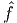 (κ,t)∕∂t = -iκv(t)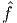 (κ,t), where κ is the wave number and 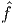 the Fourier transform of f with respect to x. In this simple case, each Fourier mode can be integrated as an ordinary differential equation.
For finite-element methods the domain is decomposed into a mesh other than a rectangular grid, perhaps triangles with varying shapes and mesh density. Such grids can accommodate boundaries of any shape and solutions that vary rapidly in a small part of the domain.
Particle methods represent the solution in terms of fields generated by localized objects. The idea is exemplified by the electric field produced by point charges. The electric potential obeys a PDE, the Poisson equation, but it can also be expressed by Coulomb’s law. To calculate the force exerted by a collection of point charges, it is possible to sum the Coulomb forces instead of solving the Poisson equation in all of space. And the force exerted by a continuous patch of charges can be obtained by integration over the patch. (In mathematics, this method of solving partial differential equations is called the “method of sources.”)
Recommended Reading: LeVeque Numerical Methods for Conservation Laws provides an introduction to the topic described in its title, especially the one-dimensional case. Gustafsson, Kreiss, and Oliger Time Dependent Problems and Difference Methods contains a comprehensive mathematical treatment of finite difference methods.